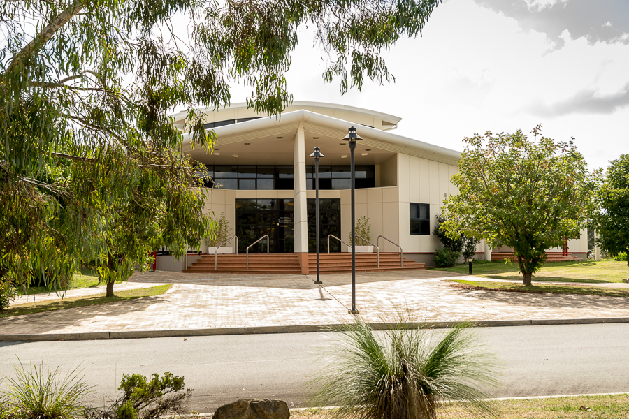

World Shrine for all humankind - Takayama, Japan

Suza with Cherry Blossoms

World Shrine for all humankind - Takayama, Japan

World Shrine for all humankind - Takayama, Japan

Suza in Winter

Performance in front of Suza

Suza in the mountains

Sukyo Mahikari Australia Oceania Regional Headquarters
Sukyo Mahikari Australia Oceania Regional Headquarters
Sukyo Mahikari Australia Oceania Regional Headquarters
Sukyo Mahikari Australia Oceania Regional Headquarters Yoko Garden